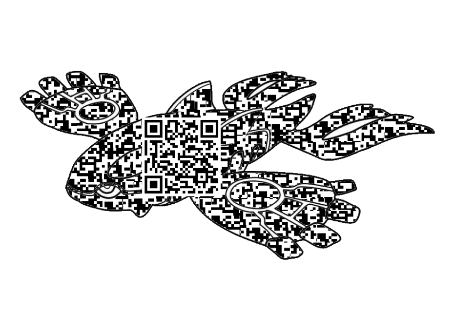
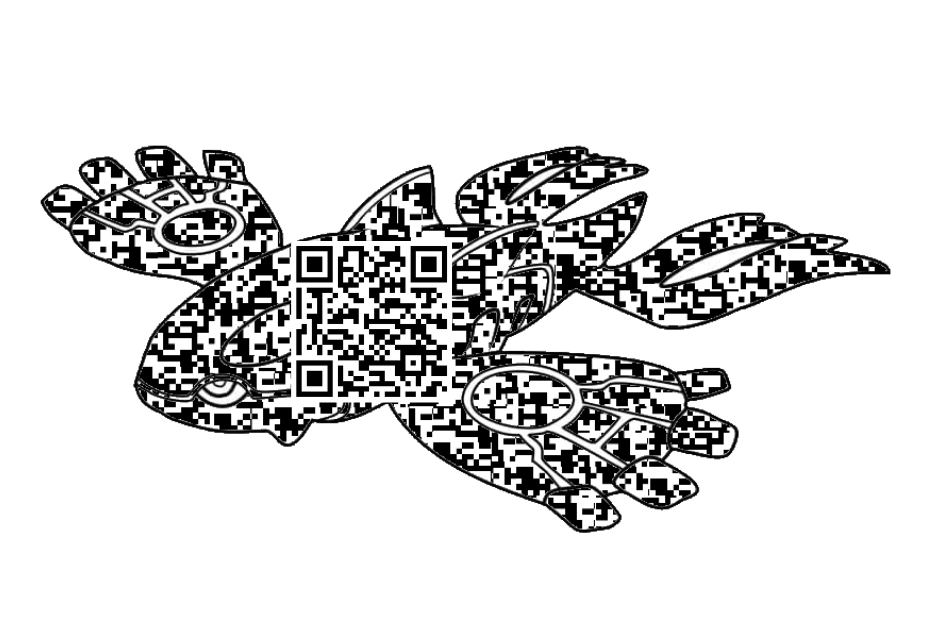

Poumons → Surface de la mer et échanges gazeux
Le savais-tu ?
 

Bon fonctionnement
Une mer saine absorbe efficacement le CO₂ et régule l'oxygène, contribuant à la stabilité climatique. De même, des poumons en bonne santé permettent une respiration efficace, augmentant la capacité énergétique du corps et réduisant le stress.
C'est SUPER ça !

Mauvais fonctionnement
La pollution océanique réduit la capacité d'absorption des gaz, entraînant une acidification des eaux et la mort des micro-organismes essentiels, ce qui brise la chaîne alimentaire. Parallèlement, des poumons dysfonctionnels (asthme, BPCO) réduisent la capacité d'oxygénation, provoquant des troubles métaboliques.
Oh non ça fait peur